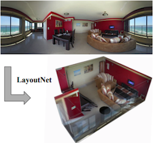
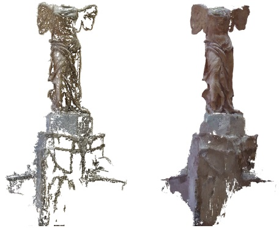

|
Qi Shan
|
Qi Shan graduated from the PhD program of the CSE
department of University of Washington, Seattle, supervised by Prof. Brian Curless and Prof. Steve Seitz.
Qi Shan leads a technology group at Apple that focuses on artificial intelligence topics. This includes neural rendering, generative AI, and the optimization of large language and vision neural networks for Apple SoC. These efforts are contributing to Apple's products and platforms, including iOS, macOS, Vision Pro, and Apple Intelligence.
Email: shanqitr-atmark-gmail.com
Google Scholar
|
|
|
Publications
|
Talaria: Interactively Optimizing Machine Learning Models for Efficient Inference,
Fred Hohman, Chaoqun Wang, Jinmook Lee, Jochen Görtler, Dominik Moritz, Jeffrey Bigham, Zhile Ren, Cecile Foret, Qi Shan, and Xiaoyi Zhang
CHI 2024, Best Paper Honorable Mention
|
|
StableDreamer: Taming Noisy Score Distillation Sampling for Text-to-3D,
Pengsheng Guo, Hans Hao, Adam Caccavale, Zhongzheng Ren, Edward Zhang, Qi Shan, Aditya Sankar, Alexander G. Schwing, Alex Colburn, and Fangchang Ma
2023
|
|
UPSCALE: Unconstrained Channel Pruning,
Alvin Wan, Hanxiang Hao, Kaushik Patnaik, Yueyang Xu, Omer Hadad, Zhile Ren, and Qi Shan
[Project page with code]
ICML 2023
|
|
HyperDiffusion: Generating Implicit Neural Fields with Weight-Space Diffusion,
Ziya Erkoç, Fangchang Ma, Qi Shan, Matthias Niessner, Angela Dai
arXiv:2303.17015
Project page
|
|
PointConvFormer: Revenge of the Point-based Convolution,
Wenxuan Wu, Li Fuxin, and Qi Shan
arXiv:2208.02879
CVPR 2023
|
|
Texturify: Generating Textures on 3D Shape Surfaces,
Yawar Siddiqui, Justus Thies, Fangchang Ma, Qi Shan, Matthias Nießner, and Angela Dai
arXiv:2204.02411
Project page
ECCV 2022
|
|
FvOR: Robust Joint Shape and Pose Optimization for Few-view Object Reconstruction
,
Zhenpei Yang, Zhile Ren, Miguel Angel Bautista, Zaiwei Zhang, Qi Shan, and Qixing Huang
arXiv:2205.07763
Project page
ECCV 2022
|

|
Fast and Explicit Neural View Synthesis,
Pengsheng Guo, Miguel Angel Bautista, Alex Colburn, Liang Yang, Daniel Ulbricht, Joshua M. Susskind, and Qi Shan
arXiv:2107.05775
WACV 2022
|
|
RetrievalFuse: Neural 3D Scene Reconstruction with a Database,
Yawar Siddiqui, Justus Thies, Fangchang Ma, Qi Shan, Matthias Nießner, and Angela Dai,
arXiv:2104.00024
ICCV 2021
|
|
MVS2D: Efficient Multi-view Stereo via Attention-Driven 2D Convolutions,
Zhenpei Yang, Zhile Ren, Qi Shan, and Qixing Huang,
arXiv:2104.13325
CVPR 2022.
|
|
Screen Recognition: Creating Accessibility Metadata for Mobile Applications from Pixels,
Xiaoyi Zhang, Lilian de Greef, Amanda Swearngin, Samuel White, Kyle Murray, Lisa Yu, Qi Shan, Jeffrey Nichols, Jason Wu, Chris Fleizach, Aaron Everitt, and Jeffrey P. Bigham,
CHI 2021.
|

|
Equivariant Neural Rendering,
Emilien Dupont, Miguel Angel Bautista, Alex Colburn, Aditya Sankar, Carlos Guestrin, Josh Susskind, and Qi Shan,
ICML 2020.
arXiv:2006.07630
Code and project page
|
|
3D Manhattan Room Layout Reconstruction from a Single 360 Image: A Comparative Study of State-of-the-art Methods,
Chuhang Zou, Jheng-Wei Su, Chi-Han Peng, Alex Colburn, Qi Shan, Peter Wonka, Hung-Kuo Chu, and Derek Hoiem,
arXiv:1910.04099
Code and pre-trained models
|

|
LayoutNet: Reconstructing the 3D Room Layout from a Single RGB Image,
Chuhang Zou, Alex Colburn, Qi Shan, and Derek Hoiem,
CVPR 2018.
arXiv:1803.08999
Code
|
|
RIDI: Robust IMU Double Integration,
Hang Yan, Qi Shan, and Yasutaka Furukawa.
Project page
Video
arXiv:1712.09004
|
|
Panoramic Structure from Motion via Geometric Relationship Detection,
Satoshi Ikehata, Ivaylo Boyadzhiev, Qi Shan, and Yasutaka Furukawa.
arXiv:1612.01256
Video
|
|
IM2CAD,
Hamid Izadinia, Qi Shan, and Steven M. Seitz,
CVPR 2017.
arXiv:1608.05137 (August 2016)
Project Page
|
 |
Accurate Geo-registration by Ground-to-Aerial Image Matching,
Qi Shan, Changchang Wu, Brian Curless, Yasutaka Furukawa, Carlos Hernandez, and Steven M. Seitz,
3DV 2014, oral presentation.
Project Page
|
 |
Photo Uncrop,
Qi Shan, Brian Curless, Yasutaka Furukawa, Carlos Hernandez, and Steven M. Seitz,
ECCV 2014.
Project Page
A Seattle Times article |
|  |
Occluding Contours for Multi-View Stereo,
Qi Shan, Brian Curless, Yasutaka Furukawa, Carlos Hernandez, and Steven M. Seitz,
CVPR 2014.
Project Page
|
 |
The Visual Turing Test for Scene Reconstruction,
Qi Shan, Riley Adams, Brian Curless, Yasutaka Furukawa, and Steven M. Seitz,
3DV 2013, oral presentation.
Best Paper Award.
Project Page
|
 |
Tone Mapping High Dynamic Range Videos using Wavelets,
Qi Shan, Mark Meyer, Tony DeRose, John Anderson,
Pixar Technical Memo #12-01, 2012.
Project Page
|
|
|
Refractive Height Fields from Single and Multiple Images,
Qi Shan, Sameer Agarwal, and Brian Curless,
CVPR 2012.
Project Page |
 |
Toward a Visual Pedometer,
Dawei Liu, Qi Shan, and Dan Wu,
SAC 2012. |
 |
Seeing through Obscure Glass,
Qi Shan, Brian Curless, and Tadayoshi Kohno,
ECCV 2010.
Spatially variant non-blind deconvolution executable
Project Page |
 |
Using Optical Defocus to Denoise,
Qi Shan, Jiaya Jia, Sing Bing Kang, and Zenglu Qin,
CVPR 2010.
Technical report on non-blind deconvolution |
 |
Globally Optimized Linear Windowed Tone-Mapping,
Qi Shan, Jiaya Jia, and Michael S. Brown,
TVCG 2010.
Code
Project Page |
 |
Fast Image/Video Upsampling,
Qi Shan, Zhaorong Li, Jiaya Jia, and Chi-Keung Tang,
SIGGRAPH
ASIA 2008.
Project Page |
|
High-Quality Motion Deblurring From a Single Image,
Qi Shan, Jiaya Jia,
and Aseem Agarwala,
SIGGRAPH 2008.
Project Page
Interactive deblur project page
Interactive deblur YouTube link |
 |
Rotational Motion Deblurring of a Rigid Object from a Single
Image,
Qi Shan,
Wei Xiong, and Jiaya Jia,
ICCV
2007. |
Released Software
Spatially variant non-blind deconvolution
HDR Tone-mapping (in Matlab)
Image Upsampling (GPU Enabled)
Video Upsampling
Non-Blind Deconvolution
Single Image Deblur
Contact Info.
Email: shanqi-atmark-cs.washington.edu
|
{kind=link}